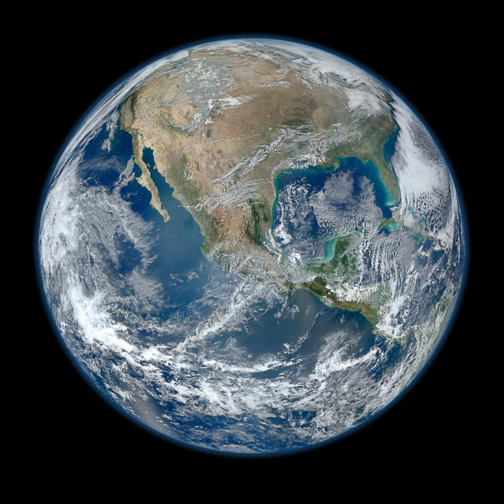

38°07′ N 13°21′ E VICINO A CASA
Widget fotografici SkylineWebcams · aggiornamento ogni 5 minutiSfondo d’archivio: Panorama dai tetti · Wittylama · CC BY-SA 4.0 · ritaglio per lo schermo
IL MONDO CHE CAMBIA
UN PIANETA, MILLE ORARI
Mentre il mondocontinua a girare.

La Terra · composito satellitare d’archivio NASA / JPL-Caltech
UNO SGUARDO PIÙ IN LÀ
Vento e previsioni · Windy · dati del modello, non una ripresa video
UN PICCOLO INTERVALLO
Un respiro lento.Il resto può aspettare.
Atmosfere · composizione generativa